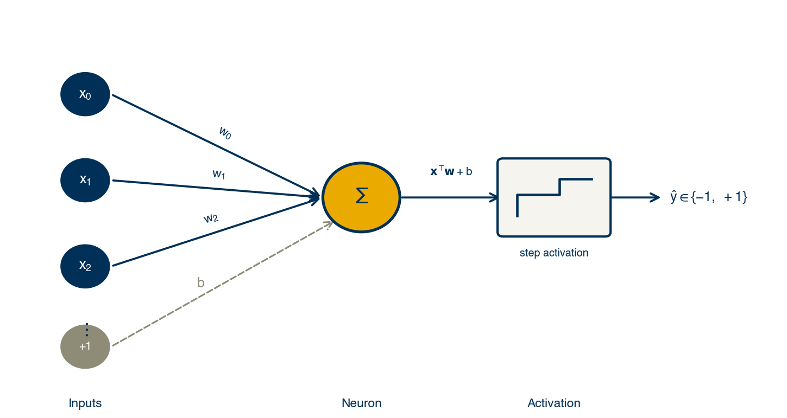
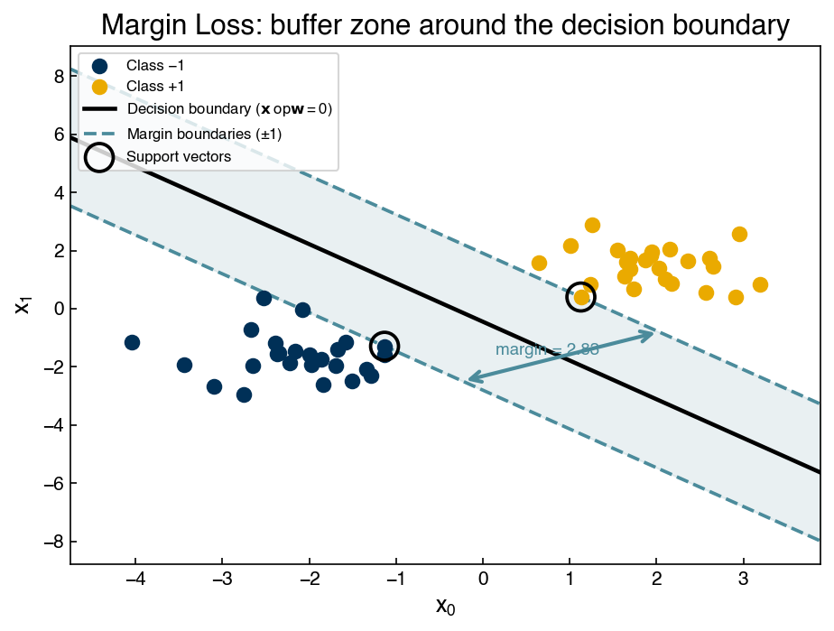
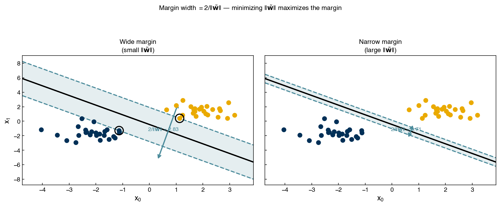
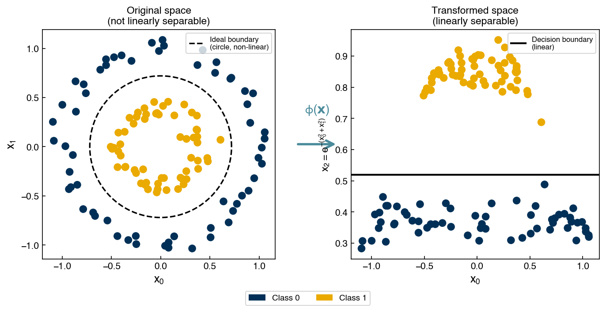

Generalized Linear Models#
Learning Objectives
By the end of this chapter, you will be able to:
Explain how generalized linear models extend the linear model through non-linear link functions
Derive and implement the perceptron, logistic regression, and margin-based loss functions
Minimize classification loss functions numerically using
scipy.optimize.minimizeExplain the support vector machine as a regularized margin classifier
Apply kernel methods to non-linearly separable datasets using scikit-learn’s
SVC
In this chapter we explore a family of discriminative classification models called generalized linear models (GLMs). The name is easy to confuse with the general linear model used in regression, but the two are distinct—though there are important similarities.
Recall the general linear model for regression:
In the general linear model we assume the error \(\vec{\epsilon}\) is normally distributed. A generalized linear model relaxes this assumption by applying a non-linear link function \(\sigma\):
where \(\sigma\) maps the normal distribution to the distribution of interest. Rather than deriving these link functions from probability theory, we will arrive at them naturally by examining different loss functions for classification.
We begin by generating four toy datasets that will be used throughout the chapter to compare models:
import warnings
warnings.filterwarnings('ignore', 'FigureCanvasAgg is non-interactive')
import numpy as np
import matplotlib.pyplot as plt
plt.style.use('../settings/plot_style.mplstyle')
from sklearn.datasets import make_blobs, make_moons, make_circles
np.random.seed(1)
# GT color palette — derived from the prop_cycle in plot_style.mplstyle
clrs = np.array(plt.rcParams['axes.prop_cycle'].by_key()['color'])
noisiness = 1
X_blob, y_blob = make_blobs(n_samples=200, centers=2, cluster_std=2*noisiness, n_features=2)
X_mc, y_mc = make_blobs(n_samples=200, centers=3, cluster_std=0.5*noisiness, n_features=2)
X_circles, y_circles = make_circles(n_samples=200, factor=0.3, noise=0.1*noisiness)
X_moons, y_moons = make_moons(n_samples=200, noise=0.1*noisiness)
fig, axes = plt.subplots(1, 4, figsize=(22, 5))
datasets = [(X_blob, y_blob), (X_mc, y_mc), (X_circles, y_circles), (X_moons, y_moons)]
titles = ['2-class blobs', '3-class blobs', 'circles', 'moons']
for ax, (Xi, yi), title in zip(axes, datasets, titles):
ax.scatter(Xi[:, 0], Xi[:, 1], c=clrs[yi])
ax.set_xlabel('$x_0$')
ax.set_ylabel('$x_1$')
ax.set_title(title)
plt.tight_layout()
plt.show()
Perceptron Loss Function#
Recall from the previous chapter the derivation of the perceptron loss function. We start with a linear model that discriminates between two classes:
Multiplying through by \(y_i\) collapses these two inequalities into one:
Taking the maximum with zero turns this into an equality that is zero for correctly classified points and positive for misclassified ones:
Summing over all data points gives the perceptron loss:
We implement the linear classifier and the loss function below. Note that scikit-learn labels classes as 0 and 1, but our derivation assumed −1 and +1, so we rescale before fitting.
def add_intercept(X):
"""Prepend a column of ones to X for the bias term."""
return np.append(np.ones((X.shape[0], 1)), X, axis=1)
def linear_classifier(X, w):
"""Return a boolean array: True where the model predicts class 1."""
return np.dot(add_intercept(X), w) > 0
# Rescale blob labels from {0, 1} to {-1, +1}
X = X_blob
y = y_blob * 2 - 1
fig, axes = plt.subplots(1, 2, figsize=(8, 4))
axes[0].hist(y_blob, bins=3)
axes[0].set_title('Original class labels (0 / 1)')
axes[1].hist(y, bins=3)
axes[1].set_title('Rescaled class labels (\u22121 / +1)')
plt.tight_layout()
plt.show()
def max_cost(w, X, y):
Xb = np.dot(add_intercept(X), w)
return np.sum(np.maximum(0, -y * Xb))
We can now minimize the loss with scipy.optimize.minimize to find optimal weights:
from scipy.optimize import minimize
w_init = np.array([-10.0, -4.0, -10.0])
result = minimize(max_cost, w_init, args=(X, y))
w_perceptron = result.x
print(result)
message: Optimization terminated successfully.
success: True
status: 0
fun: 0.0
x: [-1.069e+01 -2.422e+00 -9.679e+00]
nit: 1
jac: [ 0.000e+00 0.000e+00 0.000e+00]
hess_inv: [[1 0 0]
[0 1 0]
[0 0 1]]
nfev: 16
njev: 4
prediction = linear_classifier(X, w_perceptron)
fig, axes = plt.subplots(1, 2, figsize=(14, 5))
axes[0].scatter(X[:, 0], X[:, 1], c=clrs[y_blob + 1])
axes[1].scatter(X[:, 0], X[:, 1], c=clrs[prediction.astype(int) + 1])
m = -w_perceptron[1] / w_perceptron[2]
b = -w_perceptron[0] / w_perceptron[2]
axes[1].plot(X[:, 0], m * X[:, 0] + b, ls='-')
axes[0].set_title('Original Data')
axes[1].set_title('Perceptron Prediction')
plt.tight_layout()
plt.show()
Note
Problems with the max-cost loss function
The perceptron loss has two notable failure modes:
Non-differentiability. The \(\max(0, \cdot)\) function has a kink at zero, so gradient-based optimizers can struggle. Derivative-free methods work around this, but convergence is slower and less reliable.
Trivial solution. When \(\vec{w} = \vec{0}\), every term \(-y_i\bar{\bar{X}}\vec{0} = 0\), so the loss is exactly zero. An optimizer can stop immediately at \(\vec{w} = \vec{0}\) without learning anything useful. Initializing at the zero vector is therefore never safe for the perceptron.
The Perceptron as a Neural Network#
The perceptron, invented by Frank Rosenblatt in 1958, was the original artificial neural network. Its structure mimics a biological neuron that “fires” when the weighted sum of its inputs exceeds a threshold:
{kind=link}

Fig. 13 The perceptron as a single-layer neural network. Inputs \(x_0, x_1, x_2, \ldots\) are each multiplied by a learned weight and fed into a summation neuron (\(\Sigma\)) together with a bias \(b\). The linear combination \(\mathbf{x}^\top\mathbf{w} + b\) is then passed through a step activation function, producing a binary class label \(\hat{y} \in \{-1, +1\}\).#
All the generalized linear models for classification—logistic regression, SVMs, and others—share this same single-layer architecture. What distinguishes them is the choice of activation function (equivalently, the loss function used during training).
Exercise 51
Apply the perceptron to the circles dataset. Rescale y_circles to ±1, minimize max_cost starting from w_init, and plot the resulting decision boundary. Think about whether a straight line can ever perfectly separate this dataset, and what the optimizer is forced to do instead.
Logistic Regression#
The max-cost loss has two problems: the trivial solution at \(\vec{w} = \vec{0}\) and non-differentiability. Both can be addressed by replacing \(\max\) with a smooth approximation called the softmax:
Applying this substitution to the perceptron loss gives:
and the softmax cost:
The figure below compares the exact \(\max\) with its softmax approximation:
x = np.linspace(-5, 5, 200)
fig, ax = plt.subplots(figsize=(6, 4))
ax.plot(x, np.maximum(0, x), label='Max')
ax.plot(x, np.log(np.exp(0) + np.exp(x)), ls='--', label='Softmax')
ax.set_xlabel('x')
ax.set_ylabel('y')
ax.set_title('Max vs. Softmax')
ax.legend()
plt.tight_layout()
plt.show()
The softmax is smooth (differentiable everywhere) and strictly positive at \(\vec{w} = \vec{0}\), so both problems are resolved at once.
Minimizing \(g_{\text{softmax}}\) with respect to \(\vec{w}\) is called logistic regression. The resulting normal equations are non-linear and must be solved iteratively (e.g., via Newton’s method). We solve it numerically here:
def softmax_cost(w, X, y):
Xb = np.dot(add_intercept(X), w)
return np.sum(np.log(1 + np.exp(-y * Xb)))
result = minimize(softmax_cost, w_init, args=(X, y))
w_logit = result.x
prediction = linear_classifier(X, w_logit)
fig, axes = plt.subplots(1, 2, figsize=(14, 5))
axes[0].scatter(X[:, 0], X[:, 1], c=clrs[y_blob + 1])
axes[1].scatter(X[:, 0], X[:, 1], c=clrs[prediction.astype(int) + 1])
m = -w_logit[1] / w_logit[2]
b = -w_logit[0] / w_logit[2]
axes[1].plot(X[:, 0], m * X[:, 0] + b, ls='-')
axes[0].set_title('Original Data')
axes[1].set_title('Logistic Regression Prediction')
plt.tight_layout()
plt.show()
Demonstration: Perceptron vs. Logistic Regression on the Moons Dataset#
To compare the two approaches on a harder dataset, we apply both to the moons data. Importantly, neither model can perfectly separate the moons because they are not linearly separable—but the loss values reveal a key behavioral difference:
y_moons_scaled = y_moons * 2 - 1
w_init_moons = np.array([-10.0, 10.0, 5.0])
result_p = minimize(max_cost, w_init_moons, args=(X_moons, y_moons_scaled))
result_l = minimize(softmax_cost, w_init_moons, args=(X_moons, y_moons_scaled))
print(f"Perceptron loss (optimized): {max_cost(result_p.x, X_moons, y_moons_scaled):.4f}")
print(f"Logistic loss (optimized): {softmax_cost(result_l.x, X_moons, y_moons_scaled):.4f}")
fig, axes = plt.subplots(1, 2, figsize=(14, 5))
for ax, w_opt, title in zip(axes,
[result_p.x, result_l.x],
['Perceptron', 'Logistic Regression']):
pred = linear_classifier(X_moons, w_opt)
ax.scatter(X_moons[:, 0], X_moons[:, 1], c=clrs[pred.astype(int) + 1])
m = -w_opt[1] / w_opt[2]
b = -w_opt[0] / w_opt[2]
ax.plot(X_moons[:, 0], m * X_moons[:, 0] + b, 'k-')
ax.set_title(title)
plt.tight_layout()
plt.show()
Perceptron loss (optimized): 0.0000
Logistic loss (optimized): 53.9395
The perceptron loss reaches near zero because it only penalizes points on the wrong side of the boundary and ignores how far wrong they are. The logistic loss is higher because the softmax assigns a small but non-zero penalty even to correctly classified points far from the boundary—this is a feature, not a bug, since it keeps pushing the boundary away from the data and prevents overconfident solutions.
Exercise 52
Run minimize(softmax_cost, w0, args=(X, y)) for the blobs dataset using three different initial guesses: w0 = [-10, -4, -10], w0 = [0, 1, 1], and w0 = [10, 4, 10]. Plot the three resulting decision boundaries on the same scatter plot. Think about whether the boundaries converge to the same solution, and what that implies for the choice of initial guess in practice.
Margin Loss Function#
The trivial-solution problem with the perceptron can be fixed directly—without smoothing \(\max\)—by requiring a margin around the boundary. Instead of asking the model to be merely correct (\(\bar{\bar{X}}\vec{w} \gtrless 0\)), we require it to be correct by at least one unit:
The buffer region \([-1, +1]\) is the margin:
{kind=link}

Fig. 14 The margin loss introduces a buffer zone of width \(2/\|\vec{\tilde{w}}\|\) around the decision boundary (shaded). Circled points are the support vectors—the training points that define the margin edges. Any point inside the shaded region incurs a positive loss even if it is on the correct side of the boundary.#
Applying the multiply-by-\(y_i\) and maximum trick gives the hinge (margin) loss:
At \(\vec{w} = \vec{0}\) every term equals 1, giving a total loss of \(N\)—the trivial solution is gone.
def margin_cost(w, X, y):
Xb = np.dot(add_intercept(X), w)
return np.sum(np.maximum(0, 1 - y * Xb))
result = minimize(margin_cost, w_init, args=(X, y))
w_margin = result.x
print(f"Margin loss at optimum: {margin_cost(w_margin, X, y):.4f}")
Margin loss at optimum: 0.0000
We can also apply the same smoothing strategies from logistic regression—replacing \(\max\) with either a squared penalty or the softmax:
def margin_cost_squared(w, X, y):
Xb = np.dot(add_intercept(X), w)
return np.sum(np.maximum(0, 1 - y * Xb) ** 2)
def margin_cost_softmax(w, X, y):
Xb = np.dot(add_intercept(X), w)
return np.sum(np.log(1 + np.exp(1 - y * Xb)))
result_sq = minimize(margin_cost_squared, w_init, args=(X, y))
result_sm = minimize(margin_cost_softmax, w_init, args=(X, y))
w_opt_margin2 = result_sq.x
w_opt_softmax_m = result_sm.x
All five models produce plausible boundaries for the linearly separable blobs dataset:
fig, axes = plt.subplots(1, 2, figsize=(14, 5))
axes[0].scatter(X[:, 0], X[:, 1], c=clrs[y_blob + 1])
axes[1].scatter(X[:, 0], X[:, 1], c=clrs[y_blob + 1])
labels = ['perceptron', 'logistic', 'max margin', 'squared margin', 'softmax margin']
w_set = [w_perceptron, w_logit, w_margin, w_opt_margin2, w_opt_softmax_m]
for w_i, color, label in zip(w_set, clrs[:5], labels):
m = -w_i[1] / w_i[2]
b = -w_i[0] / w_i[2]
axes[1].plot(X[:, 0], m * X[:, 0] + b, color=color, label=label)
axes[1].legend(fontsize=8)
axes[0].set_title('Original Data')
axes[1].set_title('Decision Boundaries — All Models')
plt.tight_layout()
plt.show()
Note
Which loss function is best?
For linearly separable data there is no single “best” boundary—infinitely many lines correctly separate the classes, and the specific solution found depends on the loss function, initialization, and optimizer. The softmax margin is a reasonable default: it is smooth, has no trivial solution, and tends to find centrally-placed boundaries. Adding regularization, as in the SVM below, is the principled approach to making the solution unique.
Exercise 53
Apply both margin_cost and margin_cost_squared to the moons dataset. Rescale y_moons to ±1 and minimize both starting from w_init_moons. Plot the two resulting decision boundaries on the same scatter plot and print the optimized loss values. Think about which cost function has a smoother gradient near the boundary and how that affects the optimizer’s convergence.
Support Vector Machines#
From Margins to Support Vectors#
The margin loss has a remaining problem: for linearly separable data there are still infinitely many valid solutions. We can obtain a unique solution by adding a regularization penalty that encourages the widest possible margin.
It can be shown geometrically that the margin width is inversely proportional to the Euclidean norm of the weight vector (excluding the intercept):
{kind=link}

Fig. 15 The same dataset with two different weight vectors. Left: the maximum-margin solution (small \(\|\vec{\tilde{w}}\|\)) yields a wide margin. Right: a weight vector with four times the norm yields a margin four times narrower. The annotated width \(2/\|\vec{\tilde{w}}\|\) confirms the inverse relationship.#
Combining the hinge loss with \(L_2\) regularization gives the support vector machine objective:
where \(\vec{\tilde{w}}\) is \(\vec{w}\) with the intercept term omitted.
def regularized_cost(w, X, y, alpha=1.0):
Xb = np.dot(add_intercept(X), w)
cost = np.sum(np.maximum(0, 1 - y * Xb))
cost += alpha * np.linalg.norm(w[1:], 2) # exclude intercept from regularization
return cost
result = minimize(regularized_cost, w_init, args=(X, y, 1.0))
w_svm = result.x
prediction = linear_classifier(X, w_svm)
fig, axes = plt.subplots(1, 2, figsize=(14, 5))
axes[0].scatter(X[:, 0], X[:, 1], c=clrs[y_blob + 1])
axes[1].scatter(X[:, 0], X[:, 1], c=clrs[prediction.astype(int) + 1])
m = -w_svm[1] / w_svm[2]
b = -w_svm[0] / w_svm[2]
axes[1].plot(X[:, 0], m * X[:, 0] + b, ls='-')
axes[0].set_title('Original Data')
axes[1].set_title('SVM Prediction')
plt.tight_layout()
plt.show()
Demonstration: Effect of Regularization Strength \(\alpha\)#
Increasing \(\alpha\) penalizes large weights more heavily, widening the margin at the cost of more misclassifications. Decreasing \(\alpha\) allows the boundary to fit the training data more tightly.
alphas = [0, 1, 2, 10, 100]
fig, axes = plt.subplots(1, len(alphas), figsize=(22, 4))
for ax, alpha in zip(axes, alphas):
result = minimize(regularized_cost, w_init, args=(X, y, alpha))
w_a = result.x
pred = linear_classifier(X, w_a)
ax.scatter(X[:, 0], X[:, 1], c=clrs[pred.astype(int) + 1], s=20)
m = -w_a[1] / w_a[2]
b = -w_a[0] / w_a[2]
x_range = np.linspace(X[:, 0].min(), X[:, 0].max(), 100)
ax.plot(x_range, m * x_range + b, 'k-')
ax.set_title(f'\u03b1 = {alpha}')
ax.set_xlabel('$x_0$')
ax.set_ylabel('$x_1$')
plt.tight_layout()
plt.show()
At \(\alpha = 0\) there is no regularization and the solution is one of the infinitely many valid boundaries. As \(\alpha\) grows, the penalty overwhelms the loss and the model stops fitting the data. Intermediate values of \(\alpha\) select the maximum-margin boundary, which is what the SVM is designed to find.
Note
SVMs and Ridge Regression
Support vector machines are closely related to ridge regression:
Ridge regression: squared-error loss + \(L_2\) penalty on \(\vec{w}\)
SVM: hinge loss + \(L_2\) penalty on \(\vec{\tilde{w}}\) (intercept excluded)
The two key differences are (1) the loss function (squared error vs. hinge) and (2) SVMs must be solved iteratively because the hinge loss is non-linear. If you already understand ridge regression, you understand the core idea of SVMs.
Exercise 54
Fit sklearn.svm.LinearSVC to the blobs dataset using y_blob directly—scikit-learn handles the ±1 rescaling internally. Extract the learned weights from model.coef_ and model.intercept_ and plot the LinearSVC decision boundary alongside w_svm from the Demonstration above. Think about what might cause any visible differences between the two boundaries.
Non-linearity and Kernels#
The linear models above all find a straight decision boundary, which fails for non-linearly separable datasets like circles and moons:
X = X_circles
y = y_circles * 2 - 1
result = minimize(regularized_cost, w_init, args=(X, y, 1.0))
w_lin = result.x
prediction = linear_classifier(X, w_lin)
fig, axes = plt.subplots(1, 2, figsize=(14, 5))
axes[0].scatter(X[:, 0], X[:, 1], c=clrs[y_circles + 1])
axes[1].scatter(X[:, 0], X[:, 1], c=clrs[prediction.astype(int) + 1])
m = -w_lin[1] / w_lin[2]
b = -w_lin[0] / w_lin[2]
axes[1].plot(X[:, 0], m * X[:, 0] + b, ls='-')
axes[0].set_title('Original Data')
axes[1].set_title('Linear SVM \u2014 Poor Fit')
plt.tight_layout()
plt.show()
Feature Transformation#
As with kernel ridge regression, we can endow the model with non-linear behavior by transforming the input features before fitting. Data that is not separable in the original space may become separable in a higher-dimensional transformed space.
A radial basis function (Gaussian) transform maps each point to its distance from the origin:
X_new = np.exp(-(X[:, 0]**2 + X[:, 1]**2)).reshape(-1, 1)
X_nonlinear = np.append(X, X_new, axis=1)
fig, axes = plt.subplots(1, 2, figsize=(14, 5))
axes[0].scatter(X_nonlinear[:, 0], X_nonlinear[:, 1], c=clrs[y_circles + 1])
axes[0].set_xlabel('$x_0$')
axes[0].set_ylabel('$x_1$')
axes[0].set_title('Original feature space')
axes[1].scatter(X_nonlinear[:, 0], X_nonlinear[:, 2], c=clrs[y_circles + 1])
axes[1].set_xlabel('$x_0$')
axes[1].set_ylabel('$x_2$ (Gaussian transform)')
axes[1].set_title('Transformed feature space')
plt.tight_layout()
plt.show()
The two classes are now linearly separable in the \((x_0,\, x_2)\) plane. Fitting an SVM on this augmented feature matrix yields a correct classification:
w_guess_nl = np.array([-10.0, -4.0, 0.0, -10.0])
result = minimize(regularized_cost, w_guess_nl, args=(X_nonlinear, y, 1.0))
w_svm_nl = result.x
prediction = linear_classifier(X_nonlinear, w_svm_nl)
fig, axes = plt.subplots(1, 2, figsize=(14, 5))
axes[0].scatter(X_nonlinear[:, 0], X_nonlinear[:, 1], c=clrs[y_circles + 1])
axes[1].scatter(X_nonlinear[:, 0], X_nonlinear[:, 2], c=clrs[prediction.astype(int) + 1])
m = -w_svm_nl[1] / w_svm_nl[3]
b = -w_svm_nl[0] / w_svm_nl[3]
axes[1].plot(X[:, 0], m * X[:, 0] + b, 'k-')
axes[0].set_xlabel('$x_0$')
axes[0].set_ylabel('$x_1$')
axes[1].set_xlabel('$x_0$')
axes[1].set_ylabel('$x_2$')
plt.tight_layout()
plt.show()
The Kernel Trick#
Choosing a good feature transformation requires domain knowledge and does not scale to high dimensions. The kernel trick avoids this by replacing the feature matrix with a kernel matrix \(\mathbf{K}\), whose entry \(K_{ij}\) measures the similarity between points \(\vec{x}_i\) and \(\vec{x}_j\).
For the radial basis function (RBF) kernel:
This is equivalent to computing inner products in an infinite-dimensional feature space—without ever constructing that space explicitly.
{kind=link}

Fig. 16 Left: the circles dataset in the original \((x_0, x_1)\) space—no straight line can separate the two classes (dashed circle shows the ideal boundary). Right: after the Gaussian feature map \(\phi(\mathbf{x})\) adds the coordinate \(x_2 = e^{-(x_0^2 + x_1^2)}\), the classes separate cleanly along \(x_2\) and a horizontal decision boundary suffices.#
from sklearn.metrics.pairwise import rbf_kernel
X = X_moons
y = y_moons * 2 - 1
X_kernel = rbf_kernel(X, X, gamma=1)
print(f"Kernel matrix shape: {X_kernel.shape}")
w_guess_k = np.zeros(X.shape[0] + 1)
result = minimize(regularized_cost, w_guess_k, args=(X_kernel, y, 1.0))
w_svm_k = result.x
prediction = linear_classifier(X_kernel, w_svm_k)
fig, axes = plt.subplots(1, 2, figsize=(14, 5))
axes[0].scatter(X[:, 0], X[:, 1], c=clrs[y_moons + 1])
axes[1].scatter(X[:, 0], X[:, 1], c=clrs[prediction.astype(int) + 1])
axes[0].set_title('Original Data')
axes[1].set_title('Kernel SVM Prediction')
plt.tight_layout()
plt.show()
Kernel matrix shape: (200, 200)
Note
Parametric vs. Non-parametric Models
The hand-coded kernel SVM above is non-parametric: the number of parameters grows with the training set size (one weight per row of the kernel matrix). Using all \(N\) training points as the kernel basis gives the model \(N\) parameters, making it highly flexible but prone to overfitting—we have effectively memorized the training data. Regularization and cross-validation are essential for generalization.
Kernels in Scikit-learn#
scikit-learn’s SVC implements the kernel SVM with built-in regularization. The hyperparameter C is inversely proportional to the regularization strength:
A large C allows a complex boundary (little regularization); a small C enforces a wide margin (strong regularization). The parameter gamma (\(\gamma\)) controls the RBF kernel width: large \(\gamma\) makes each point’s influence very local, producing bumpy boundaries; small \(\gamma\) spreads influence broadly, producing smoother boundaries.
from sklearn.svm import SVC
def plot_svc_decision_function(model, ax=None, plot_support=True):
"""Plot the decision boundary and margins for a fitted 2D SVC."""
if ax is None:
ax = plt.gca()
xlim = ax.get_xlim()
ylim = ax.get_ylim()
xg = np.linspace(xlim[0], xlim[1], 50)
yg = np.linspace(ylim[0], ylim[1], 50)
YG, XG = np.meshgrid(yg, xg)
xy = np.vstack([XG.ravel(), YG.ravel()]).T
P = model.decision_function(xy).reshape(XG.shape)
ax.contour(XG, YG, P, colors='k',
levels=[-1, 0, 1], alpha=0.5,
linestyles=['--', '-', '--'])
if plot_support:
ax.scatter(model.support_vectors_[:, 0],
model.support_vectors_[:, 1],
s=300, linewidth=1, facecolors='none', edgecolors='k')
ax.set_xlim(xlim)
ax.set_ylim(ylim)
fig, axes = plt.subplots(1, 3, figsize=(18, 5))
Cs = [1e-2, 1, 1e2]
for ax, C_val in zip(axes, Cs):
model = SVC(kernel='rbf', gamma=1, C=C_val)
model.fit(X, y)
y_pred = model.predict(X)
ax.scatter(X[:, 0], X[:, 1], c=clrs[((y_pred + 1) // 2).astype(int) + 1], s=50)
plot_svc_decision_function(model, ax=ax)
ax.set_title(f'C = {C_val}')
plt.tight_layout()
plt.show()
Note
Effect of C and gamma on the Decision Boundary
Large C → weak regularization → tight, complex boundary; few support vectors (points in the margin).
Small C → strong regularization → wide margin; many support vectors; more misclassifications accepted.
Large gamma → narrow kernel → each training point influences only a small neighborhood → bumpy, potentially overfitted boundary.
Small gamma → broad kernel → each training point influences a wide region → smoother boundary that may underfit.
In practice, C and gamma are tuned together via cross-validation (see the Model Validation chapter).
Exercise 55
Fit SVC(kernel='rbf', C=10) to the moons dataset (use y_moons directly) for gamma values [0.1, 1, 10, 100]. Plot the decision boundary for each using plot_svc_decision_function. Think about what happens to the number of support vectors as gamma increases, and which value is likely to generalize best to new data.
Summary#
Generalized linear models apply a non-linear link function \(\sigma\) to a linear combination of features, producing non-linear class boundaries while retaining interpretable weights.
The perceptron loss (\(\max(0, -y\hat{y})\)) is the simplest classification loss but has two failure modes: a trivial solution at \(\vec{w} = \vec{0}\) and non-differentiability.
Logistic regression replaces \(\max\) with the smooth softmax approximation, eliminating both problems and enabling gradient-based optimization.
The hinge (margin) loss adds a buffer zone around the boundary; combining it with \(L_2\) regularization gives the support vector machine, which uniquely selects the maximum-margin boundary.
Kernel methods implicitly map data into higher-dimensional spaces where non-linearly separable datasets may become separable. scikit-learn’s
SVCimplements this efficiently.The SVM hyperparameters
C(inverse regularization strength) andgamma(kernel width) strongly affect model complexity and must be tuned, typically via cross-validation.
Additional Reading#
Hastie, Tibshirani & Friedman, The Elements of Statistical Learning (2nd ed.), Ch. 4 (logistic regression) and Ch. 12 (support vector machines).
Watt, Borhani & Katsaggelos, Machine Learning Refined (2nd ed.), Ch. 4 (logistic regression derivation) and Ch. 8 (SVMs and kernels).
scikit-learn SVM User Guide — practical guidance on
SVC, kernel selection, and hyperparameter tuning.